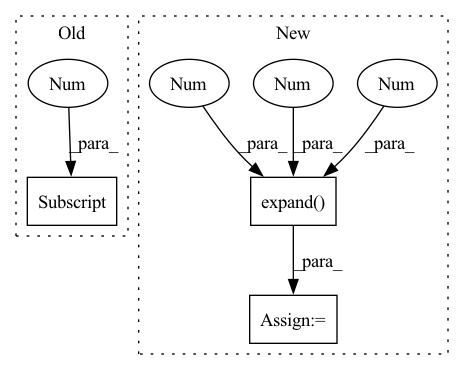

Pattern ID :20540

Before Change
stats = {}
if stage != "train":
predictions = predictions.squeeze(2)
loss = -predictions.max(dim=-1)[0].sum(dim=-1).mean()
seq = ctc_greedy_decode(predictions, lens, blank_id=params.blank_id)
phns = undo_padding(phns, phn_lens)
stats["PER"] = wer_details_for_batch(ids, phns, seq)
After Change
ids, phns, phn_lens = targets
if stage != "train":
pout = predictions.squeeze(2)
predictions = predictions.expand(-1, -1, phns.shape[1] + 1, -1)
loss = params.compute_cost(
predictions,
phns.to(params.device).long(),
In pattern: SUPERPATTERN
Frequency: 4
Non-data size: 3
Instances
Fragment ID: 66360447
Project Name: speechbrain/speechbrain
Commit Name: 7b2a912879ed4372f56df73657c4fe7e8f6eacb5
Time: 2020-06-05
Author: a.heba@irit.fr
File Name: recipes/minimal_examples/neural_networks/ASR_Transducer/example_asr_transducer_experiment.py
M Class Name: TransducerBrain
N Class Name: TransducerBrain
M Method Name: compute_objectives(4)
N Method Name: compute_objectives(4)
M Parent Class: sb.core.Brain
N Parent Class: sb.core.Brain
M File Name: recipes/minimal_examples/neural_networks/ASR_Transducer/example_asr_transducer_experiment.py
N File Name: recipes/minimal_examples/neural_networks/ASR_Transducer/example_asr_transducer_experiment.py
M Start Line: 72
M End Line: 84
N Start Line: 72
N End Line: 85
'>
Before Change
scores = F.softmax(scores, dim=-1)
_, indices = torch.topk(scores, k=self.cfg.PROPOSAL.TOPK, dim=1)
scores = scores.gather(1, indices)
boxes = boxes.gather(1, indices.expand(-1, -1, boxes.shape[-1]))
return boxes, scores
def reorganize_proposals(self, proposals):
After Change
boxes, scores = self(points, features)
scores = F.softmax(scores, dim=-1)
_, indices = torch.topk(scores, k=self.cfg.PROPOSAL.TOPK, dim=1)
box_indices = indices[..., None].expand(-1, -1, -1, self.cfg.BOX_DOF)
scores = scores.gather(1, indices)
boxes = boxes.gather(1, box_indices)
return boxes, scores, indices
'>
Fragment ID: 66360484
Project Name: jhultman/vision3d
Commit Name: 7ebf992056488b494406b55947ab182508f2d918
Time: 2020-02-15
Author: 27909223+jhultman@users.noreply.github.com
File Name: pvrcnn/detector/proposal.py
M Class Name: ProposalLayer
N Class Name: ProposalLayer
M Method Name: inference(3)
N Method Name: inference(3)
M Parent Class: nn.Module
N Parent Class: nn.Module
M File Name: pvrcnn/detector/proposal.py
N File Name: pvrcnn/detector/proposal.py
M Start Line: 27
M End Line: 29
N Start Line: 27
N End Line: 30
'>
Before Change
b_ = bandwidth.item()
G = torch.Tensor(cpu_compute_softdtw_backward(D_, R_, g_, w_, b_)).to(dev).type(dtype)
tmp_G = G*torch.sign(raw_D)
dR_X = tmp_G.matmul(torch.ones(D.shape[0], D.shape[2], X.shape[2], dtype=dtype, device=dev))
return grad_output.view(-1, 1, 1).expand_as(dR_X) * dR_X, None, None, None, None, None
After Change
w_ = warp.item()
b_ = bandwidth.item()
G = torch.Tensor(cpu_compute_softdtw_backward(D_, R_, g_, w_, b_)).to(dev).type(dtype)
tmp_G = G.unsqueeze(-1).expand(-1, -1, -1, H)
tmp_G = tmp_G * torch.sign(raw_D)
dR_X = tmp_G.sum(dim=2)
return grad_output.view(-1, 1, 1).expand_as(dR_X) * dR_X, None, None, None, None, None
'>
Fragment ID: 66360485
Project Name: keonlee9420/parallel-tacotron2
Commit Name: 1f98efe5d09778b2b77e291aff63ef6e497c6bb9
Time: 2021-07-26
Author: 1531820402@qq.com
File Name: model/soft_dtw_cuda.py
M Class Name: CPUSoftDTW
N Class Name: CPUSoftDTW
M Method Name: backward(2)
N Method Name: backward(2)
M Parent Class: Function
N Parent Class: Function
M File Name: model/soft_dtw_cuda.py
N File Name: model/soft_dtw_cuda.py
M Start Line: 257
M End Line: 259
N Start Line: 246
N End Line: 255
'>
Before Change
stats = {}
if stage != "train":
predictions = predictions.squeeze(2)
loss = -predictions.max(dim=-1)[0].sum(dim=-1).mean()
ind2lab = params.train_loader.label_dict["phn"]["index2lab"]
sequence = ctc_greedy_decode(
predictions, lens, blank_id=params.blank_index
After Change
ids, phns, phn_lens = targets
if stage != "train":
pout = predictions.squeeze(2)
predictions = predictions.expand(-1, -1, phns.shape[1] + 1, -1)
loss = params.compute_cost(
predictions,
phns.to(params.device).long(),
'>
Fragment ID: 66360480
Project Name: speechbrain/speechbrain
Commit Name: 7b2a912879ed4372f56df73657c4fe7e8f6eacb5
Time: 2020-06-05
Author: a.heba@irit.fr
File Name: recipes/TIMIT/ASR_Transducer/experiment.py
M Class Name: ASR
N Class Name: ASR
M Method Name: compute_objectives(4)
N Method Name: compute_objectives(4)
M Parent Class: sb.core.Brain
N Parent Class: sb.core.Brain
M File Name: recipes/TIMIT/ASR_Transducer/experiment.py
N File Name: recipes/TIMIT/ASR_Transducer/experiment.py
M Start Line: 84
M End Line: 98
N Start Line: 84
N End Line: 99